[GitLab] GitLab_install
Contents
這篇會介紹如何透過 docker compose 安裝 gitlab
並還有一些基本的 upgrade, backup 等操作
我使用的os是 Centos9
Install
Pre-request
Docker Install
Ref：Install Docker Engine on CentOS
Remove old docker version
|
|
Set up the repository
|
|
Install Docker Engine
|
|
Check Docker Engine version
|
|
Start/Enable Docker
|
|
Install GitLab
Ref:
install-gitlab-using-docker-compose
Setting Mount Path
因為 docker 是一個獨立於 os 的運行環境, 因此裡面的資料一般來說不會存在 local 端, 因此當 docker comtainer 一被刪除, 裡面所有的資料都會消失, 如果有存放任何的 code 也等於全部 byebye
因此在啟動 docker container 的時候要同時將 docker 的 path 和 local 端的 path 進行同步
簡單說就是 docker 該 volume 有什麼, local 端的 volume 就也會有相同的內容, 也可以直接透過修改 local volume 的內容同步到 docker 內部.
設定一個 mount path, 用來存放 gitlab 的所有 config, log, data file
|
|
官方網站有 GitLab 一般常用來 mount volume 的表格
| Local location | Container location | Usage |
|---|---|---|
| $GITLAB_HOME/data | /var/opt/gitlab | For storing application data. |
| $GITLAB_HOME/logs | /var/log/gitlab | For storing logs. |
| $GITLAB_HOME/config | /etc/gitlab | For storing the GitLab configuration files. |
GitLab CE && GitLab EE
在安裝前, 有一個部分一定要先提及一下, 到底是要選擇 CE (Community Edition) 還是 EE (Enterprise Edition) 呢?
在這邊建議直接選擇 EE 版本
沒有錢怎麼用 EE 版本!?
因為 EE 和 CE 其實核心都一樣, 並且即使沒有 license 也能啟動 EE 版本, 只是會自動把 EE 版本額外的功能鎖起來, 自動降成 CE 版, 因次不擔心無法啟動
並且之後哪天有錢了想升級, 也不用從 CE 升級 EE, 直接乖乖付錢就可以搞定
GitLab compose
|
|
|
|
Start docker compose
|
|
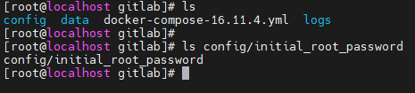
▲ 啟動完成後, 會出現 config, logs, data, 三個 volume 分別對應到 container 內部的 volume
第一次啟動後, root 的密碼存放在 config/initial_root_password 裡面
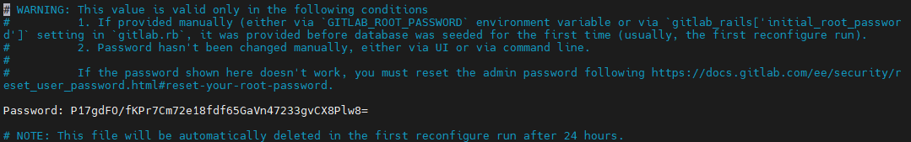
▲ /etc/initial_root_password 需要注意此檔案會在 24hr 後自動刪除, 請自行修改密碼或記下
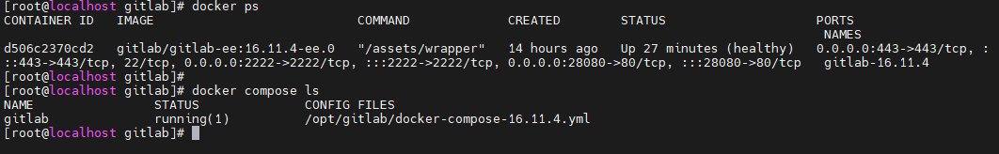
▲ 可以看到 docker gitlab 將內部的 80 port 映射在 local 端的 28080
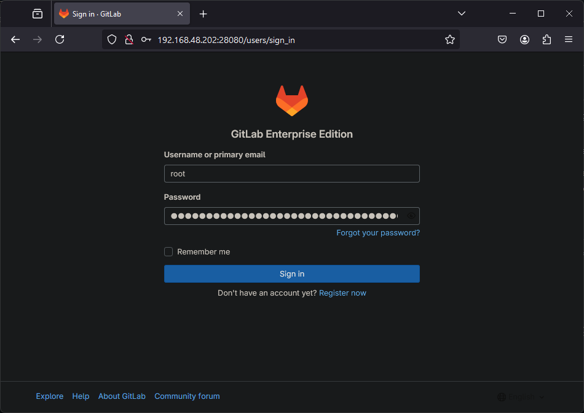
▲ 在 local 的 url 透過 http://192.168.48.202:28080 開啟 web gui, 輸入帳號 root 和 config/initial_root_password 的密碼
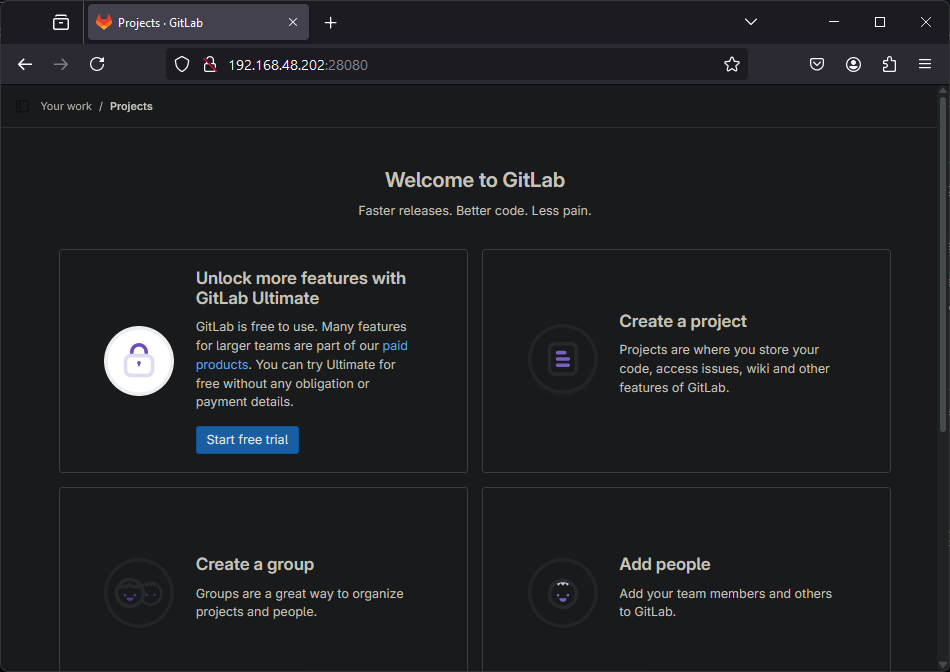
▲ 成功登入
Set Gitlab Url
當在 Gitlab 中, create new project 之後會發現在需要使用 git clone/push 等功能時, 會發現 git lab 的 url 變成 d506c2370cd2, 表示這在 gitlab 對外表示依然是使用預設 container 的 ID
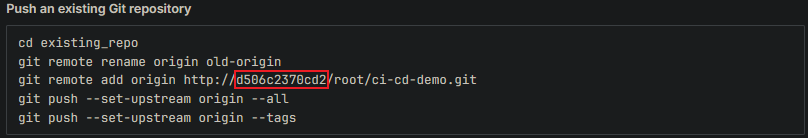
這時候需要修改當初在 docker compose file 中 remark 的部分 environment, GITLAB_OMNIBUS_CONFIG, external_url
|
|
設定完成之後因為之後進行 git clone/push 等等相關操作, 還是需要指定該 url 所使用的 ip, 所以還要進行額外設定
如果有 DNS Server 需要設定 xq-gitlab.com 指向到 gitlab container 的 host ip 192.168.48.202
或者自行在 /etc/hosts 指向到 gitlab container 的 host ip 192.168.48.202
|
|
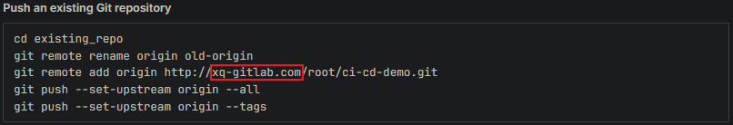
Upgrade / Backup
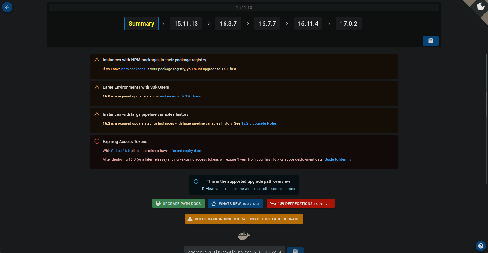
▲ 檢查所需的升級停止點
必需的升級停止是您在升級到更高版本之前, 必須升級到的 GitLab 版本, 從上述舉例狀況
15.11.13 => 17.0.2 的完整路徑為 15.11.13 => 16.3.7 => 16.7.7 => 16.11.4 => 17.0.2
並且會提醒相關的注意事項.
這邊我升級的路徑較為簡單
e.g. 使用 16.11.4 upgrade 到 17.0.2
在進行 upgrade / backup 之前, 我已有在 gitlab 上 create repo 等動作, 因此稍晚可以進行檢查
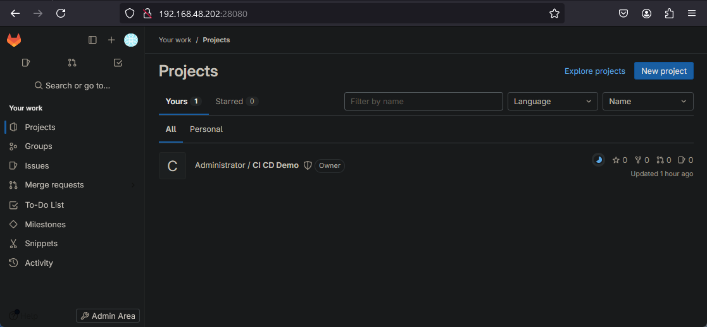
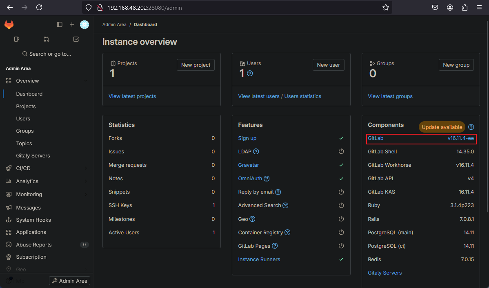
|
|
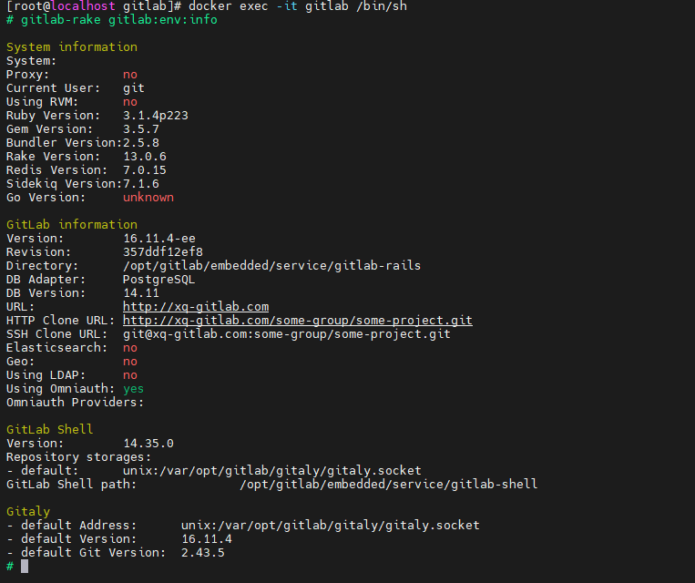
Backup
|
|
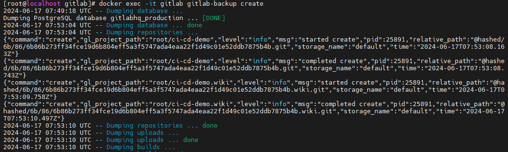
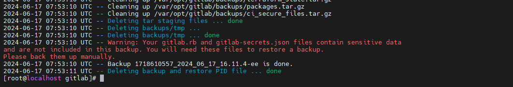
使用備份命令之後會在 /opt/gitlab/data/backup/ 建立一個壓縮檔 1718610557_2024_06_17_16.11.4-ee_gitlab_backup.tar
1718610557：timestamp2024_06_17：備份年月日16.11.4-ee：GitLab 的 version 和表示 ee (企業版)gitlab_backup.tar：備份檔案的類型和副檔名
|
|
壓縮的兩個檔案功能分別為
config/gitlab.rb：設定檔備份, 確保在復原時能正確配置所有服務和功能的設定config/gitlab-secrets.json：機密資訊備份, 確保所有加密的敏感資料能夠正確解密, 並且所有服務的機密資訊保持不變
Moditfy docker compose file
vim docker-compose-17.0.2.yml
一般來說只需要修改 image 使用的部分, image: gitlab/gitlab-ee:17.0.2-ee.0
stop / upgrade
|
|
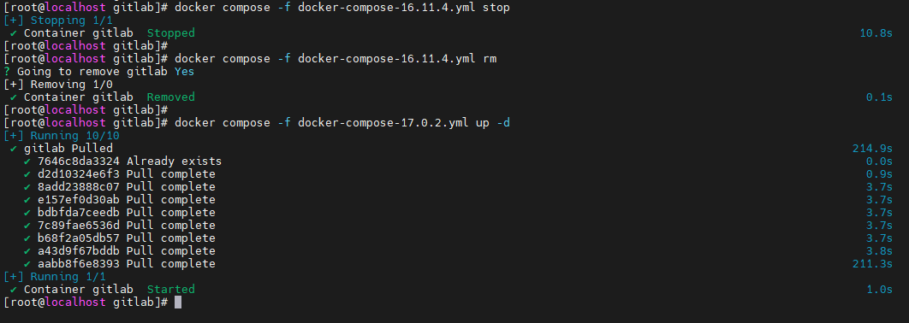 ▲ 因為我沒有提前下載 image, 所以會在 compose file 執行後才下載 image
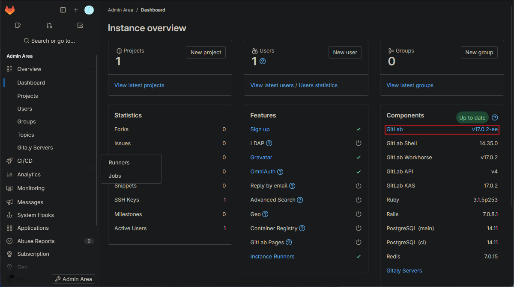 ▲ Version 更新到 17.0.2
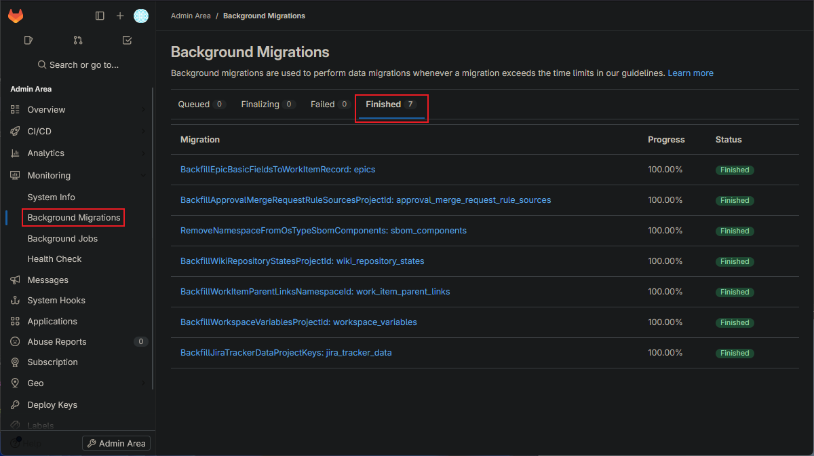 ▲ Migration 所有的 Progress
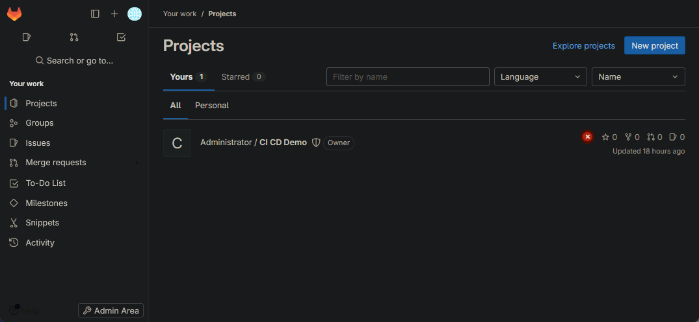 ▲ 確認 repo 也依然存在